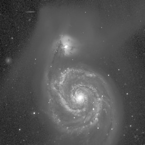

|
All the mViewer functionality can be accessed through the command-line. In what follows we will use backslash/newline to make the examples more readible, as one would for a shell script. All the mViewer "directives" are specified in the form:-directive arg1 .. argn where the number of arguments varies depending on the directive. Only two directives are required: the input FITS file name and stretch arguments and the output file name (and, by inference, type):
mViewer -gray m51.fits -2s max gaussian-log \
-out m51.png
The first directive, -gray takes four arguments: the FITS file name, minimum stretch range, maximum stretch range, and stretch mode. Since good data stretching is essential to proper visualization, there are several variants of the stretch parameters: |
 |
FITS file. For a simple FITS image file this argument is just the file name. However, FITS files can have multiple Header-Data Units (HDUs) and an HDU may be a datacube rather than a single plane. Only one plane of one HDU can be displayed at once (or three separate ones as "full color") so we need a way to specify HDU/plane choices. Following the example of the CFITSIO library, we support "subscripting" of the file name with an HDU and cube plane selection: "m51.fits[2][314]". Note that even if there is only one HDU if you want a specific plane you still have to explicitly call out HDU0 ( "m51.fits[0][314]").
Stretch minimum and maximum. When mViewer opens the FITS file, the first thing it does is to generate a histogram of the data and find the min/max values. Most astronomical images have a lot of pixels near the low end of the distribution with a more or less gaussian distribution, either due to noise around a base ("zero") level or due to low-level (but real) background variations due to, e.g., galactic dust emission, etc. In addition, there are usually a much smaller number of brighter pixels adding a high-value tail to the distribution.
With this general model in mind, the stretch values can be specified in one of three forms: an exact value, a percentile of the integrated histogram, or as a "sigma" value relating to the gaussian described above. So if the min or max is just given as a number ("4.65") it is taken as a real data value; a percentile has the percent character as a suffix ("10%"); and a sigma value has an 's' character suffix ("-0.5s"). In addition, the words "min" and "max" can be used as shorthand for 0% and 100% (the data min/max values).Stretch mode. The last argument specifies the color bin spacing between the minimum and maximum. If it is "linear", the bins are equally spaced. It can also be "log" or "loglog". A more advanced approach is to space the bins based on the data. This is often done in programs like Photoshop as a simple histogram equalization but for astronomical images this will put undue emphasis on the lower data values, essentially focussing on the structure of the noise. To prevent this, mViewer applies an error function (erf) transform to the histogram and, optionally, a logarithmic transform as well. These modes, "gaussian" and "gaussian-log" usually do an extraordinarily good of showing structure at all brightness scales. In fact, a gaussian-log stretch from -2s to max is almost always a good starting point. The min value can then be adjusted to account for low-level data quality.